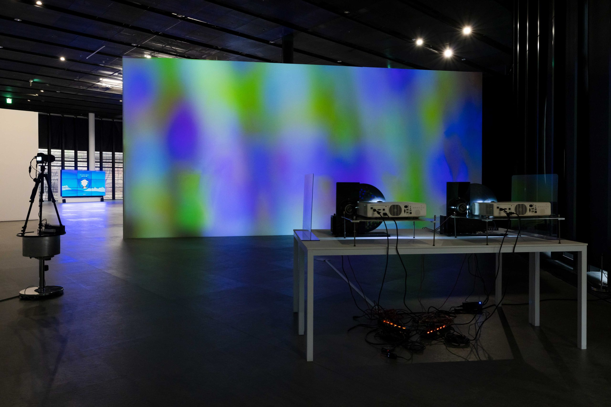
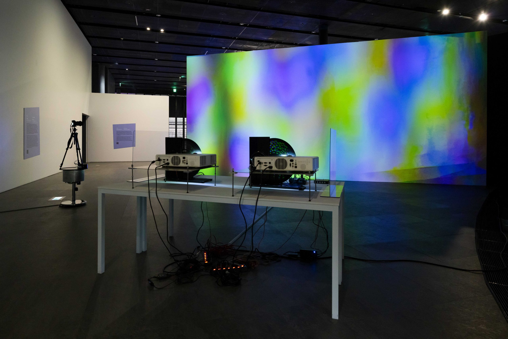
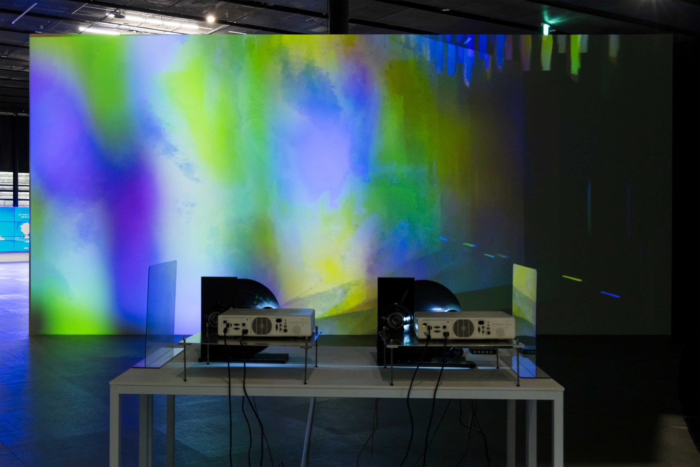
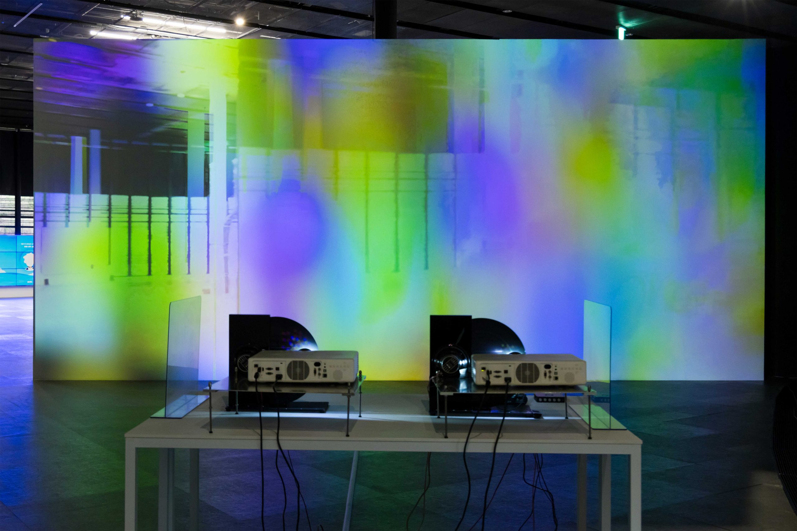
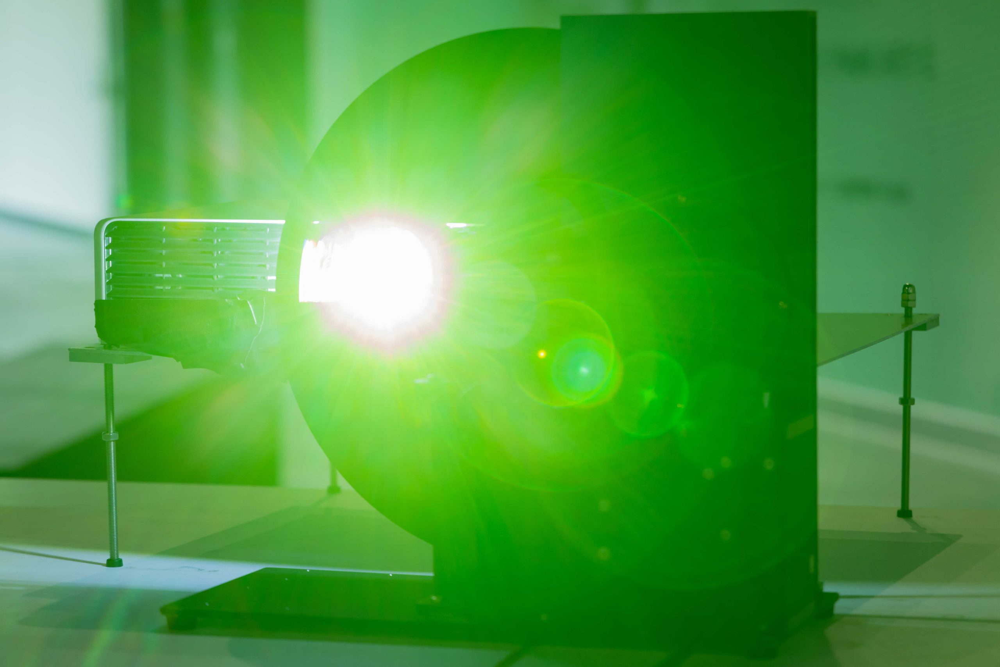
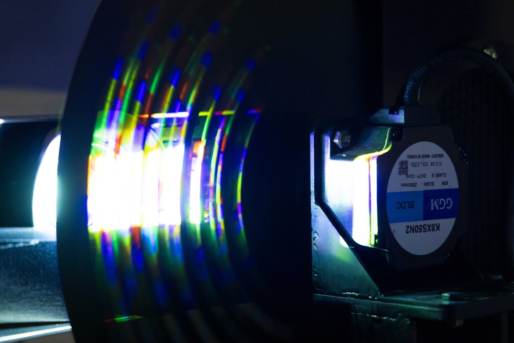
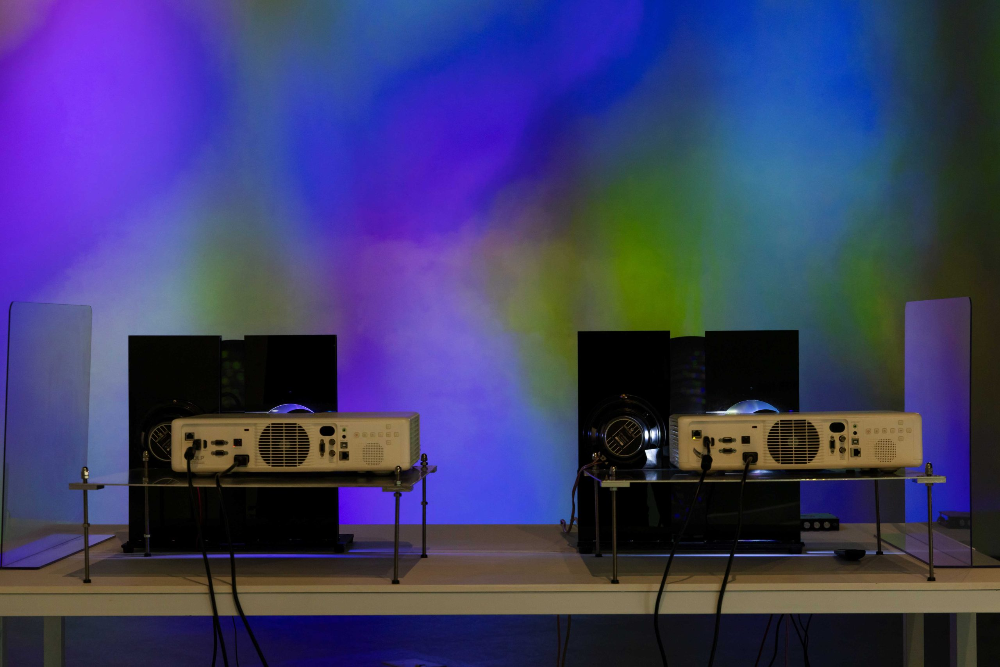
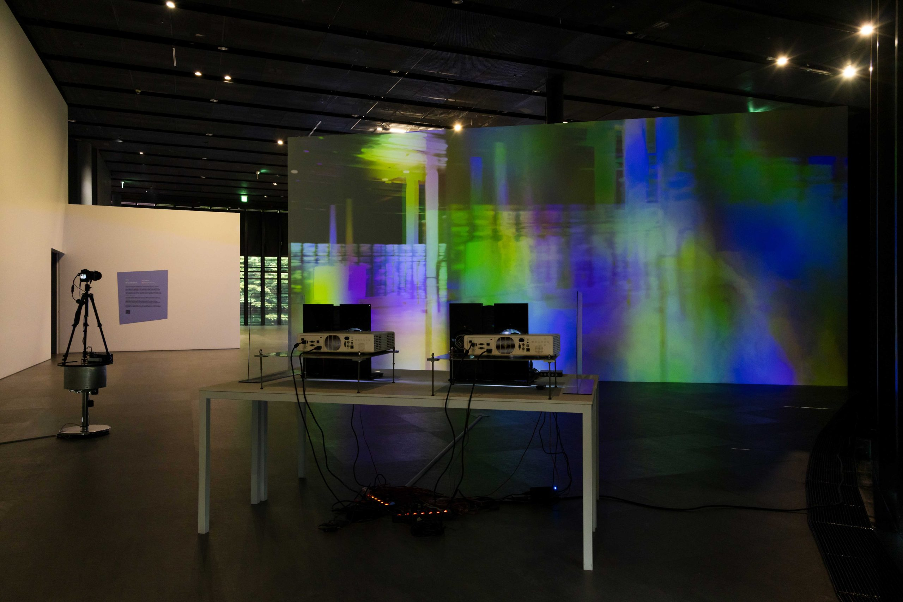

Exhibition:
Big Brother Blockchain
《빅브라더 블록체인》
나선필름, 360도 회전 장치, 셔터스피드 조절장치 2대, 프로젝터 2대, 카메라, 스크린, 라이브 상영
2024. 3. 21.—2024. 8. 18.
굿모닝 미스터 오웰 40주년 특별전
장소: 백남준아트센터 제2전시실
일시: 2024. 3. 21.—2024. 8. 18.
기획: 이수영, 임채은
참여작가: 권희수, 삼손 영, 상희, 이양희, 장서영, 조승호, HWI(휘), 홍민키, 히토 슈타이얼
주최주관: 백남준아트센터, 경기문화재단
《Big Brother Blockchain》
Spiral Film, 360-degree rotating device, two shutter speed controllers, two projectors, camera, screen, live screening



















“빅 브라더가 당신을 지켜보고 있다.” 조지 오웰은 소설 『1984』에서 빅브라더를 예언하며 감시와 통제로 얼룩진 암울한 근 미래를 묘사했다. 35년 후 백남준은 1984년의 새해 첫날을 오웰에게 응답할 최적의 기회로 보았다. 백남준은 미래에 대한 경고와 화려한 쇼를 오가며 뉴욕과 파리를 연결하는 위성 쇼를 전 세계에 선물하며 “굿모닝 미스터 오웰, 당신은 절반만 맞았다”고 말했다.
그로부터 40년이 지난 2024년, 우리도 백남준을 따라 동시대 기술 환경으로부터 어떠한 미래를 읽을 수 있을지 답을 찾고자 한다. 《빅브라더 블록체인》은 블록체인으로 상징되는 다가올 기술 미래에 대해 이야기한다. 블록체인은 분산된 원장 시스템에 기반하여, 중앙 서버나 중개자를 거칠 필요없이 정보의 공급자와 소비자를 연결한다. 빅브라더가 개인의 자유를 억압하는 기술에 대한 막연한 두려움을 상징하는 것이라면 블록체인은 공동체 안에 형성된 신뢰를 바탕으로 모든 정보를 투명하게 기록하고 공유하는 기술을 지향한다.
《빅브라더 블록체인》에 참여한 작가들-권희수, 삼손 영, 상희, 이양희, 장서영, 조승호, 홍민키, HWI(휘), 히토 슈타이얼은 백남준이 〈굿모닝 미스터 오웰〉에 섭외했던 뉴욕과 파리의 사회자들, 로리 앤더슨과 피터 가브리엘, 존 케이지, 오잉고 보잉고, 머스 커닝햄과 같은 작가들의 미래의 모습이다. 그래서 이들의 작업은 이미 본듯한 미래가 반복되는 어지러움을 일으키는 한편, 각각 춤, 노래, 사운드, 미디어, 기술, 게임, 노동에 대한 전망을 그리고 있다. 참여작가들은 미래의 데이터를 저장하는 최초의 블록을 형성하며 이 블록은 네트워크에 있는 또 다른 블록에게 전송된다. 새로운 블록들은 데이터를 직접 주고받는 P2P 동료 즉 전시를 경험하고 공유하는 관객이다. 이들은 최초의 블록에 담긴 정보를 공유하고 분산하는 역할을 하며 여기에는 공동체 누구나 참여할 수 있다.
백남준이 〈굿모닝 미스터 오웰〉에서 보여주고자 했던 것은 위성으로 시공간이 압축되어 버린 새로운 인터넷 시대였다. 나아가 기술의 용도변경이 가능하다는 희망이었다. 우리는 백남준이 위성을 축제와 예술의 도구로 사용하며 정해진 길을 벗어나 기술 미래의 다른 경로를 상상했다는 것을 돌아보아야 한다. 미래에 대한 현명한 답을 구하는 우리에게 필요한 것은 또 다른 세상에 대한 상상, 여전히 유효한 예술이 지닌 힘이다.